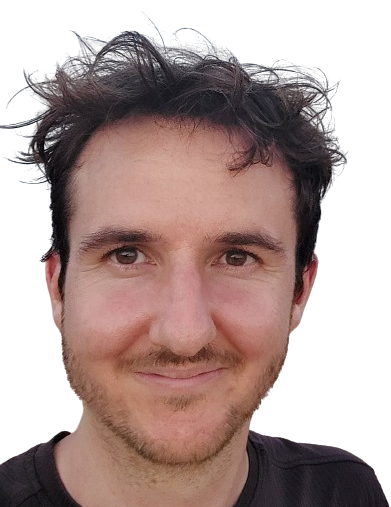

Timo Freiesleben
About
Research
Teaching
Contact

Philosophy and Ethics of AI
Philosophy of Science and Scientific Modeling
Explainable Artificial Intelligence
Evaluation and Robustness of Machine Learning Systems
I did my PhD at the Graduate School of Systemic Neurosciences (GSN) under the supervision of Prof. Stephan Hartmann on the question
what explainable AI explains . Before my PhD I studied mathematics, philosophy of science, computer science and neuroscience in Tübingen, Oslo, and Munich. You can find my complete CV here (Version 10-2025).
Impressum: Timo Freiesleben, Ludwigstrasse 31, 80539 München.